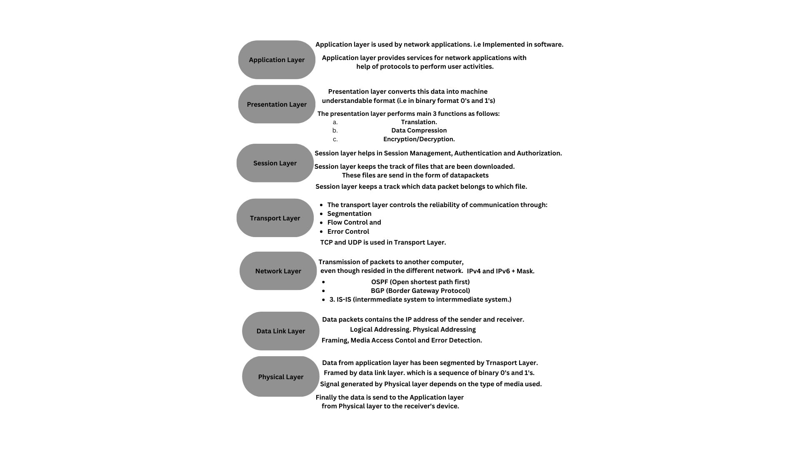

OSI (Open System Interconnection Model)
This model describe how data is transfer through one computer to another computer in a computer network.
- This modele was established by ISO (International Organization of Standradization) in 1984. Containing following modules:
- Application Layer
- Presentation Layer
- Session Layer
- Transport Layer
- Network Layer
- Data Link Layer
- Physical Layer
- Note: Each layer is packet of protocols.
Application Layer:
- Application layer is used by network applications (i.e computer applications use Internet.) like Google Chrome,Opera,Firefox,Skype,Gmail etc.
- Web browser does not reside inside the application layer but it uses application layer protocols like HTTP or HTTPs.
- There are dozens of application layer protocols that enable various functions at this layer.
- This protocols forms the various network services. like
File transfer (FTP protocol)
web Surfing. (HTTPS/HTTPs)
Emails. (SMTP or POP)
Virtual Terminals. (Telnet) etc.
- Application layer provides services for network applications with help of protocols to perform user activities.
Presentation Layer:
- It receives data from Application layer.
- This data is in the form of characters and numbers.
Presentation layer converts this data into machine understandable format (i.e in binary format 0's and 1's)
- This functionality is called translation.
- Before the data is transmitted Presentation layer redueces the number of bits that are used to represent the original data.
This bit reduction process is called as Data Compression. and
it can be lossy or lossless.
- As the file size is redueced it will take less time to reach the destination. (i.e data transmission can be done faster).
- It can be very useful in Video and Audio Streaming.
- To maintain the integrity of the data. The data is encrypted.
- Encryption enhances the security of the data.
- Sender side the data is encrypted and at receiver side the data is decrypted.
- SSL protocol or Secured Socker Layer protocol is used in Presentation layer for encryption and decryption.
- Presentation Layer performs main 3 functions as follows:
- Translation.
- Data Compression
- Encryption/Decryption.
Session Layer:
- Session layer helps setting up and managing connections enabling sending and receiving of data followed by terminating connections or sessions.
- It takes the help from some helpers like
- APIs
- NETBIOS
- Just before a connection establish with server. Server performs functions like
Authentication: Authentication is a process which defines, who the client is? or who you are? for this server uses a Username and Password.
After connection has been established the Authorization is checked. Authorization is a process used by server to determine if you have a permission to access a file, if not you'll get a message you're not authorized to display this page.
- Session layer keeps the track of files that are been downloaded. These files are send in the form of datapackets.
- Session layer keeps a track which data packet belongs to which file.
- Also tracks where the data packets go.
Session layer helps in Session Management, Authentication and Authorization.
- Your web browser performs all the above 3 functionalities i.e Application,Presentation and Session layer.
Transport Layer:
- Transport layer controls the reliablity of communication through:
- Segmentation
- Flow Control
- Error Control
- In Segmentation: Data received from Session layer is divided into small data unit called segments.
- Each segment contains a source and destination's port number and a Sequence Number.
- Port number helps to direct each segment to the correct application and sequence number reassembles the segments in the correct order to form a correct message at the receiver.
- In Flow Control: Amount of data being transmitted is controlled by Transport Layer.
- for e.g. if the data is transferred by the server is 100 Mbps and Mobile phone receiving capacirty is 10 Mbps then Mobile sends a message to the server to send the data in 10 Mbps speed to avoid the loss of packets.
Also if the data is transferred by the server at low speed rate like 5 Mbps then Mobile send a message to the server to send a files at 10 Mbps speed.
this is nothig but the data speed control.
- In Error Control: If some data doesn't arrived to the destination then transport layer uses Automatic Repeat Request (ARR) schemes to retransmit the lost or corrupted data.
- A group of bit is called Checksum is added to each segment by the transport layer to find out received corrupted segment.
- protocols of Trnasport Layer are: TCP (Trnasmission control protocol: 100% gauranteed transmission of data)
or UDP (User Datagram Protocol.)
- Transport layer performs two types of services:
- Connection oriented transmission (TCP)
- Connectionless transmission (UDP)
- UDP is faster than TCP because it does not provide any feedback. for e.g. (Bittorrent)
- where as TCP provides a feedback, therefore, lost data can be retransmitted in the TCP. e.g. (WWW, FTP, Email)
Network Layer:
- Network layer receives data segments from the Transport Layer and transfers the data segments to one computer to another computer located in different networks.
- Data units used in the network layer is called Packets.
- It is the layer where routers reside.
- The function of Network layers are:
- Logical Addressing.
- Routing
- Path Determination.
- Logical Addressing.
- IP addressing done in Network layer is called Logical Addressing (IPv4 and IPv6).
- Every computer in a network has a unique IP address.
- Network layer assignes IP address to sender's and receiver's each segment to form an Packet
- IP address is assigned ensures that each data packets can reach the correct destination.
- Routing:
- It's a method of moving data packets from source to destination. It is based on the logical address format of IPv4 or IPv6.
- IPv4 and IPv6 + Mask.
- Path Determination:
- A computer can connected to the internet server in a number of ways.
- By choosing the best possible path for data delivery from source to destination is called path determination.
- it uses following protocols to determine best possible path for data delivery such as:
- OSPF (Open shortest path first)
- BGP (Border Gateway Protocol)
- IS-IS (intermmediate system to intermmediate system.)
Data Link Layer:
- Data link layer receives the packets from the Network layer.
- Data packets contains the IP address of the sender and receiver.
- There are two kinds of addressing:
- Logical Addressing: Done at Network Layer.
- Physical Addressing: Done at Data Link Layer:
Where MAC address of sender and receiver are assigned to each data segment of the packet to form a frame.
MAC address is alphanumeric 12 digit number.
NIC (network interface cards are used in data link layer which is nothing but the embedded software.)
NIC is used to transfer the data from one computer to another computer by local media
such as coaxial wire, optical fiber or radio signal(AIR).
- Data Link layer performs two basic functions:
- It allows the upper layer to access the media using techniques such as framing.
It controls how data is placed and controls the media using techniques such as:
Media Access Contol and Error Detection.
Physical Layer:
- Data from application layer has been segmented by Trnasport Layer.
Placed into packets by Network Layer.
Framed by data link layer. which is a sequence of binary 0's and 1's.
Physical layer converts this Binary Sequence into Signals and trnasmit it over
Local Media. It can be a electrical signal in case of LAN cable or copper cable.
Or Light signal in case of optical fiber
or Radio signal in case of AIR.
Signal generated by Physical layer depends on the type of media used.
Finally the data is send to the Application layer from Physical layer to the receiver's device.
Summary:
